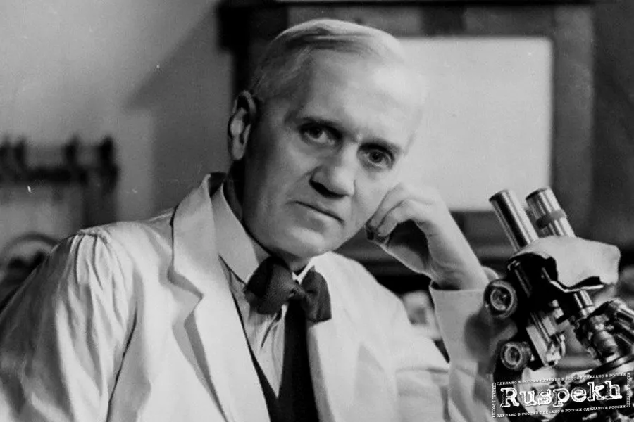

Early years, education
Fleming was born on 6 August 1881 at Lochfield Farm, near Darvel, in the Ayrshire region of Scotland. He was the third of four children by the second wife (four children from his first marriage) of farmer Hug Fleming (1816–1888), Grace Stirling Morton (1848–1928), daughter of a neighboring farmer. The second time his father married at 59 years old, and died when Alexander (known as Alec) was only 7 years old.
Until the age of twelve, Fleming studied at a country school in Darvel, and then for another two years at Kilmarnock Academy. At the age of fourteen he moved to live with his brothers in London, where he began working as a clerk in a delivery office, as well as attending classes at the Royal Polytechnic Institute, Regent Street.
His elder brother Thomas was already working as an ophthalmologist and following his example, Alexander also decided to study medicine. His choice of medical school was largely influenced by his participation in a water polo match with students from St. Mary's Hospital. At medical school, Fleming won a scholarship in 1901. Also scholarships from the University of London MB and BS in 1906 went to him.
At the time, he did not have a strong affinity for any particular area of medical practice. Works on surgery showed that he could be an outstanding surgeon. But life directed him along a different path, connected with "laboratory medicine". As a student, he came under the influence of pathology professor Almroth Wright, who came to St. Mary's Hospital in 1902. Wright, while still in the military medical service, developed a vaccination against typhoid fever. But Wright had other ideas for treating patients already suffering from bacterial infections by stimulating their bodies to immediately respond to infections by producing "antibodies." He tried to measure the amount of these antibodies in the patient's blood. This required new methods and considerable labor. The group of young men who had joined Wright, including John Freeman, Bernard Spilsbury and John Wells, were no longer able to handle the job. Therefore, Fleming was invited to join the team as soon as he received his degree in 1906.
Once in this way in a research laboratory attached to the hospital, Fleming worked there until his death fifty years later.
During the First World War, Fleming served as a captain in the Royal Medical Army. He and many of his colleagues worked in battlefield hospitals on the western front in France. In 1918, Fleming returned to St. Mary's Hospital, where he was elected professor of bacteriology in 1928.
World famous
At the beginning of the 20th century, the problem of combating diseases caused by bacteria was acute in the world. In addition to diseases that existed in peacetime, such as syphilis and tuberculosis, many people died after being wounded on the battlefield. This prompted Fleming to study antiseptics. The scientist proved that antiseptics such as carbolic acid, at that time widely used to treat open wounds, kill white blood cells that create a protective barrier in the body, which contributes to the survival of bacteria in tissues. The search for an effective remedy against bacterial infections continued.
In 1922, Fleming accidentally discovered lysozyme, the first of the lytic enzymes to have anti-inflammatory and antiseptic properties. The scientist fell ill with the flu and took mucus from his own nose for research. Fleming added the resulting colony of microorganisms to 3 cups with strains: pneumococci, staphylococci and AF coccus bacteria. Studies have shown that it is not the virus itself that inhibits the growth of microorganisms, but an enzyme capable of lysing bacteria. Fleming called his discovery lysozyme, and the isolated strain received the final name - Micrococcus lysodeikticus.
Fleming made his most famous discovery by accident in 1928. The scientist was known among his colleagues for his carelessness: bowls with bacterial cultures, after the completion of the experiments, could stand on the table for weeks. When the mess reached its climax, and Fleming set about cleaning, he carefully examined each bowl, so as not to miss anything interesting. In one of the cups, he found mold, which, to his surprise, inhibited the inoculated culture of bacteria. After separating the mold, he found that the "broth" on which the mold grew acquired a distinct ability to inhibit the growth of microorganisms, as well as bactericidal and bacteriological properties. It was at that moment that the world received a cure that would later save millions of lives.

However, neither Fleming himself nor the scientific community gave the discovery due importance. It was possible to reveal penicillin to the world of medicine thanks to the previously discovered lysozyme by Fleming. It was this discovery that led Howard Flory and Ernst Chain to study the therapeutic properties of penicillin, as a result of which the drug was isolated and subjected to clinical trials. All honors and glory, however, went to Fleming. The accidental discovery of penicillin in a bacterial culture bowl gave the press a sensational story that instantly spread around the world.
Flory, Cheyne, and Fleming received the Nobel Prize in 1945 "for their discovery of penicillin and its curative effects in various infectious diseases." In the remaining ten years of his life, the scientist was awarded twenty-five honorary degrees, twenty-six medals, eighteen prizes, thirteen awards and honorary membership in eighty-nine academies of sciences and scientific societies, and in 1944 - a title of nobility. Fleming kept the bowl with the overgrown mold fungus until the end of his life.
End of Path
Alexander Fleming, the famous British microbiologist and pharmacologist, died on March 11, 1955 in London at the age of 73 from a heart attack . In his life, Fleming made a huge contribution to science and medicine, receiving many awards and honors for his work.
